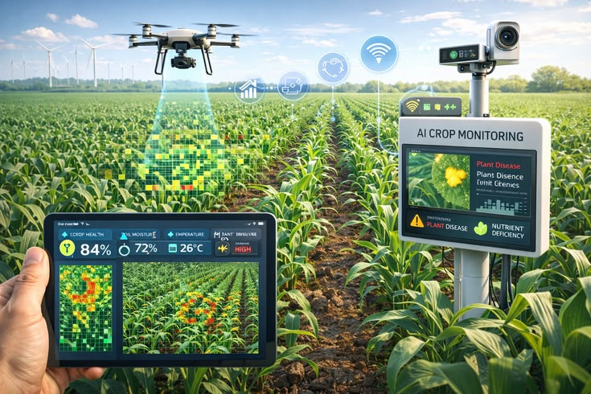
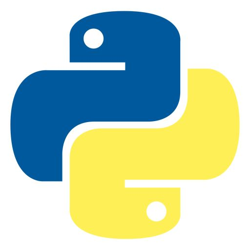
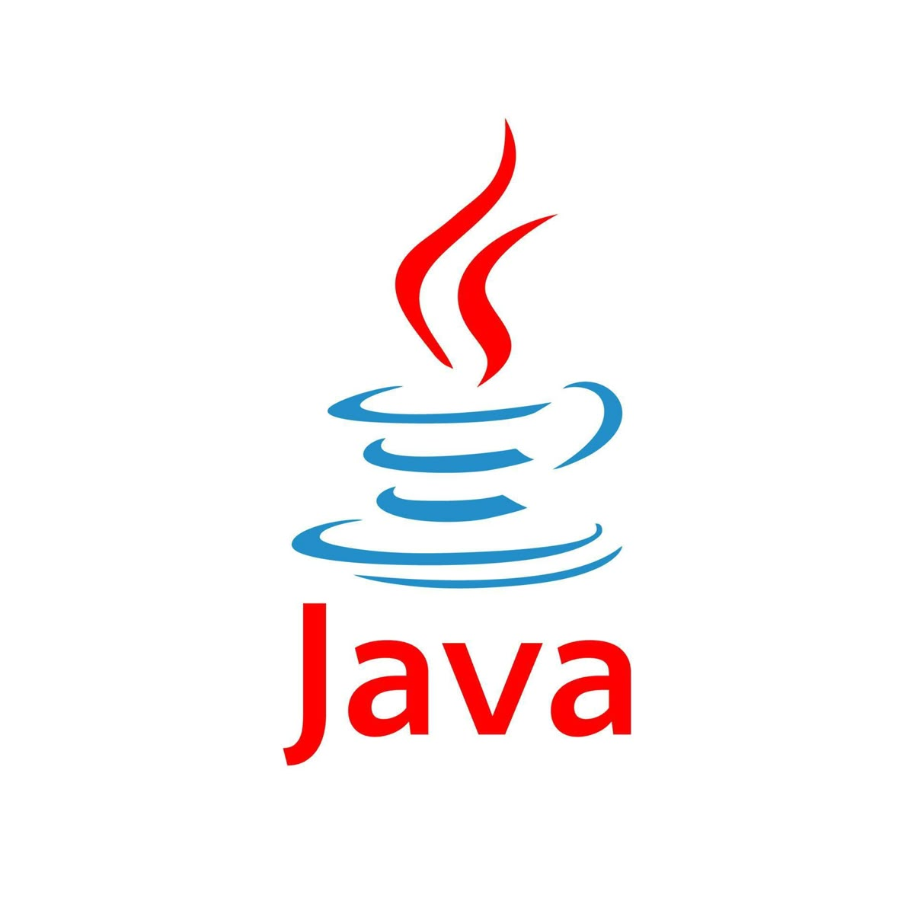

Système de Monitoring
Conception et mise en œuvre d'un système de monitoring pour suivre l'etat des cultures vivrières mais aussi pour proposer des solutions pour une agriculture durable.
En savoir plusActuellement en licence 2 en Genie logiciel,je suis un passionné par l'innovation technologique, j'évolue à la frontière entre le monde physique et l'intelligence numérique en tant que Data Scientist et Développeur de Solutions pour Systèmes Embarqués. Ma force réside dans une polyvalence technique rare, me permettant de concevoir des écosystèmes informatiques complets. Avec une maitrise des Langages de programmation tels que : C,C++,Python je développe des architectures matérielles optimisées (basées sur des microcontrôleurs comme l'ESP32) en gérant avec précision les périphériques et la basse consommation. En parallèle, ma maîtrise de Python me permet d'extraire la valeur des données brutes grâce à l'analyse statistique et au Machine Learning,transformant ainsi de simples capteurs en systèmes décisionnels intelligents. Ma compétence en Java vient compléter ce profil en m'offrant la capacité de bâtir des applications logicielles robustes, scalables et sécurisées. Qu'il s'agisse d'automatisation industrielle,de domotique ou de monitoring environnemental, j'allie la rigueur de l'algorithmique à la puissance de la Data Science pour créer des solutions fluides, autonomes et tournées vers les défis technologiques de demain

Conception et mise en œuvre d'un système de monitoring pour suivre l'etat des cultures vivrières mais aussi pour proposer des solutions pour une agriculture durable.
En savoir plus
Conception et mise en œuvre d'une base de données relationnelle pour gérer les utilisateurs d'une application console.
En savoir plus
Système automatisé avec ESP32 et capteur ultrasonique pour une gestion intelligente des déchets.
En savoir plus JavaScript
JavaScript

Python
Java